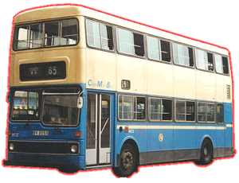

Metro-Cammell
Weymann - Metrobus
 |
車隊編號 Model 引擎 Engine 容積 Engine Capacity 波箱 Gearbox 車身 Body Build 體積 Volume 載客量 Passenger 服役年份 Year |
: MC (1-12) : Gardner 6LXB (180bhp) : 10.45 Liters : Voith DIWA851 (3-Speed Automatic) : Metro-Cammell Weymann : 9630L X 2500W X 4430H(mm) : U43 L29 S23 : 1978 - 2000 |
都城嘉慕[MCW]再次推出的雙層巴士，巴士底盤至車身，都是由自家所生產，擁有全氣墊式懸掛系統，全自動變速箱，前置式冷卻水箱，又有高低級車頭擋風玻璃的車身特徵，單門設計，並裝有2+2高背座椅，除了沒有今時今日的空調設備外，以當時計這巴士已經擁有最豪華的配撘了。中巴於1978年購入12部車，用來行走南區泳灘至中環的豪華巴士路線，目的當然又是想吸引乘客，從而減低私家車的流量。到了90年代，空調巴士的引入，而令到這些已服務了十多年的巴士退出豪華路線回到市區，但由於單車門設計，令車子在市區繁忙上落客的乘客帶來不便，所以這些車只可以被派到普通泳灘路線和上落客較少的半山區路線服務。
直到退役後，有幾部改裝成為新世界第一巴士公司的車長訓練巴士，繼續健康地在路面行走。